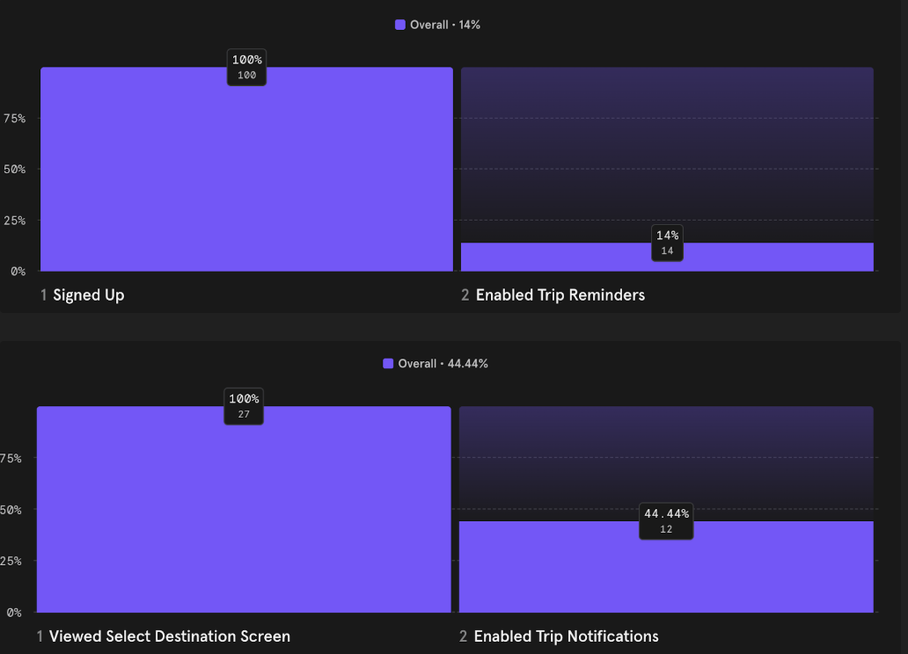

Roadmap's onboarding was losing users before they ever saw the value. I restructured the entire flow using behavioral psychology principles — leading with the product's value before asking for any commitment. The result: notification opt‑ins jumped from 14% to 44%, and Daily Active Users improved by 15%.
Role
UX/UI Designer, iOS Developer
Tools
Sketch (wireframing/design), Xcode (coding)
Platform
iOS, Mobile
UX DesignMobileiOS
Before the Redesign
Roadmap's original onboarding was a single brief intro screen followed directly by a sign‑up/login prompt — with no clear explanation of the app's value. Users dropped into onboarding with little context, which resulted in low engagement and low notification opt‑ins.
One brief intro screen, then straight to sign‑up/login
No clear explanation of app value
Users dropped into onboarding with little context
Resulted in low engagement and notification opt‑ins
Before — a single intro screen, then straight to sign‑up with no context in between.
Goal of the Redesign
Primary goal:increase the number of users who activate notifications during onboarding. We wanted new users to immediately be reminded of why they're using the app, be motivated to return daily, and begin daily challenges with more clarity and purpose about what they're working towards.
I hypothesized that including a short questionnaire and making the onboarding feel more personal would increase retention and user buy‑in.
How I Went About Redesigning
Identified friction points and drop‑off areas by auditing the original onboarding flow and comparing it to UX best practices.
Sketched and prototyped my envisioned onboarding flow.
Developed the new onboarding screens, ensuring they aligned with the game‑like tone of the app.
Tested with users and gathered feedback to evaluate the redesign's impact.
First Iterations
First iterations focused on integrating a questionnaire that identified the most challenging aspects for users, gave context for the challenges that come later in onboarding and the core app experience, gave insight into how users were finding the app, and implemented consistent UI throughout.
Early questionnaire screens — identifying each user's biggest challenge up front.
Final Iterations & Metrics
The final onboarding flow includes a section for users to identify their biggest challenges and where they encounter them, establishes context for the challenges the app provides, and reminds them of their intrinsic motivation for joining Roadmap.
The full final flow — challenge selection through to the notification prompt.The redesigned notification prompt — framed as unlocking a skill, not a permission dialog.

Notification opt‑ins jumped from 14% to 44.44% after the redesign shipped.
>100%increase in activated notifications (14% → 44%)
15%improvement in daily active users
Impact
Over 100% increase in activated app notifications (14% → 44%)
15% improvement in Daily Active Users
Positive qualitative feedback from users around clarity of the core experience and design